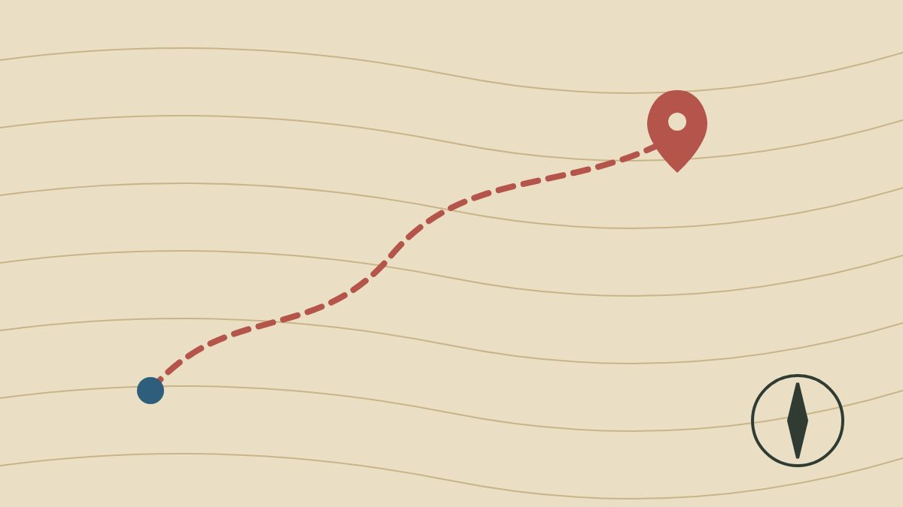

Learning to Read Maps Again

A paper map asks you to place yourself. You find the river, the church, the bend in the road, and you build a picture of the land that stays with you after you fold the map away.
A phone's blue dot asks nothing, and people who follow it remember less of where they have been. The fix is easy: look at the whole map before you set off, and check it only at junctions.